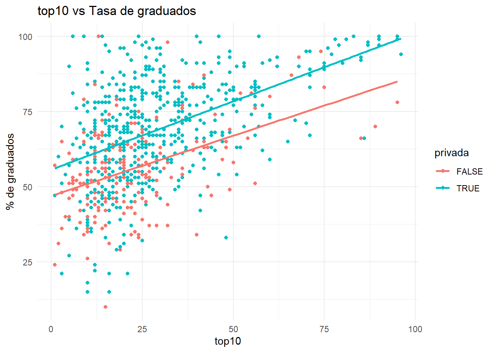
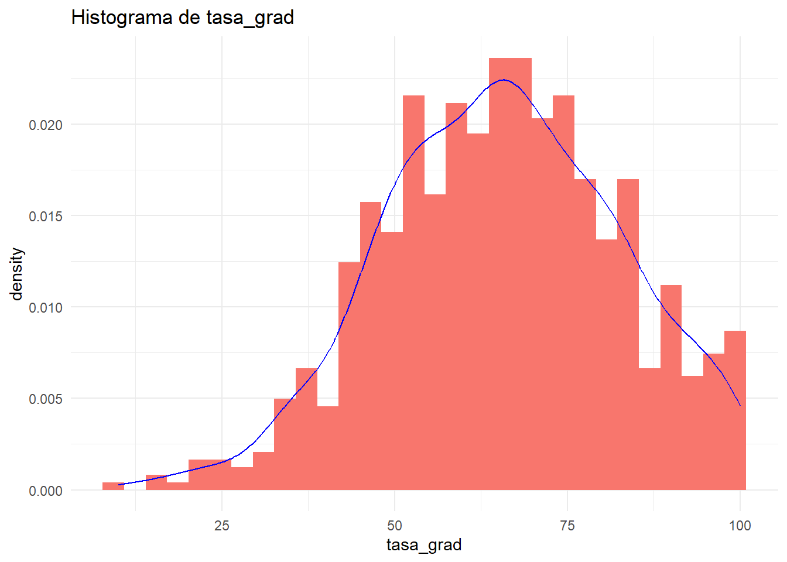
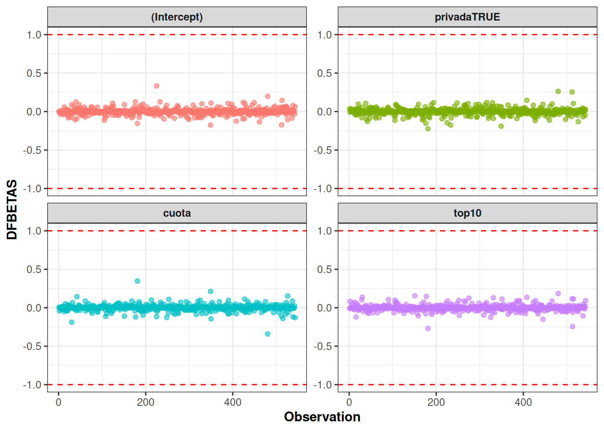
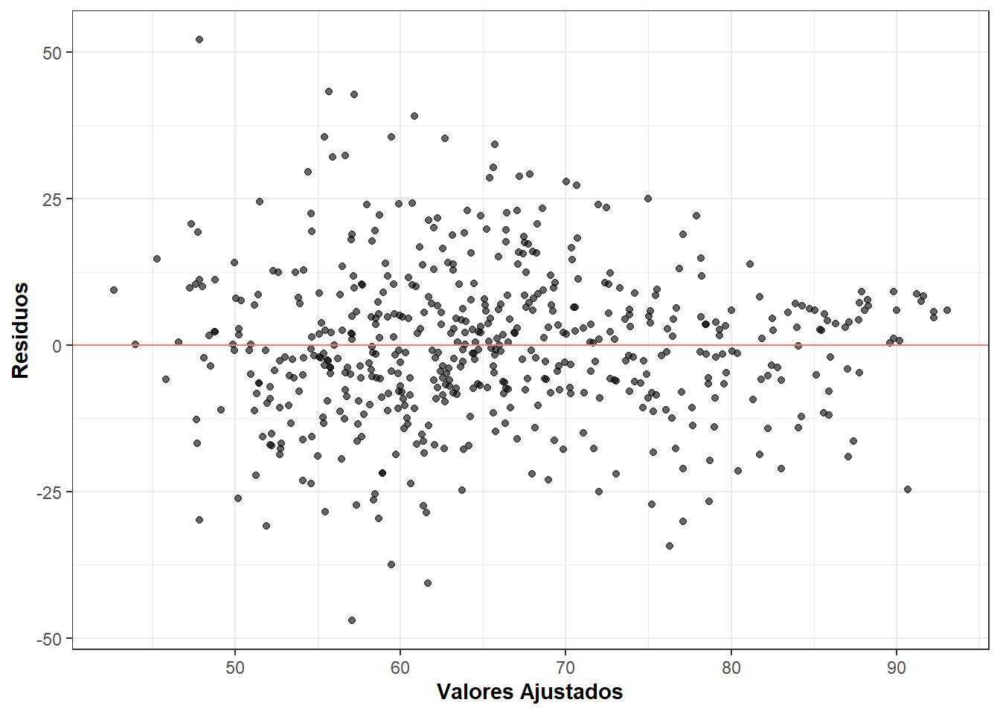

Code
library(tidyverse)
library(ggplot2)
library(MASS)
library(GGally)
library(caret)
library(corrplot)
library(janitor)
library(knitr)
library(leaps)
library(pROC)
library(glmnet)TP Final - Regresion avanzada
Se nos presenta una base de datos sobre universidades publicas y privadas con las siguientes variables
| Variable | Descripción |
|---|---|
privada |
indica si la universidad es privada o no. |
aplicaciones |
cantidad de aplicaciones recibidas por la universidad durante el último año (cada estudiante que aspira a ingresar debe presentar una aplicación formal, a partir de la cual es admitido/a o rechazado/a), medida en miles de personas. |
ingresantes |
cantidad de aplicaciones aceptadas, medida en miles de personas. |
estudiantes |
cantidad total de estudiantes en carreras de grado, medida en miles de personas. |
top10 |
porcentaje de ingresantes que fueron parte del 10% de estudiantes con mejores calificaciones en sus respectivas escuelas secundarias. |
cuota |
costo de la cuota de la universidad, medida en miles de dólares. |
prof_dr |
porcentaje de profesores de la universidad que poseen título de doctorado. |
razon |
tasa de estudiantes por profesor. |
tasa_grad |
porcentaje de estudiantes que se gradúan. |
La variable de interés es tasa_grad que indica el porcentaje de estudiantes que se gradúan
A continuacion se importan las librerias que utilizaremos y se lee la funte de la base de datos
library(tidyverse)
library(ggplot2)
library(MASS)
library(GGally)
library(caret)
library(corrplot)
library(janitor)
library(knitr)
library(leaps)
library(pROC)
library(glmnet)df = read.delim('1-data/universidades.txt')
df = df %>%
mutate(privada = factor(privada))
# categoricals_vars <- df %>%
# select(where(is.factor)) %>%
# names()
# continuous_vars <- df %>%
# select(where(is.numeric)) %>%
# names()
head(df)skimr::skim(df)| Name | df |
| Number of rows | 777 |
| Number of columns | 9 |
| _______________________ | |
| Column type frequency: | |
| factor | 1 |
| numeric | 8 |
| ________________________ | |
| Group variables | None |
Variable type: factor
| skim_variable | n_missing | complete_rate | ordered | n_unique | top_counts |
|---|---|---|---|---|---|
| privada | 0 | 1 | FALSE | 2 | Si: 565, No: 212 |
Variable type: numeric
| skim_variable | n_missing | complete_rate | mean | sd | p0 | p25 | p50 | p75 | p100 | hist |
|---|---|---|---|---|---|---|---|---|---|---|
| aplicaciones | 0 | 1 | 3.00 | 3.87 | 0.08 | 0.78 | 1.56 | 3.62 | 48.09 | ▇▁▁▁▁ |
| ingresantes | 0 | 1 | 0.78 | 0.93 | 0.04 | 0.24 | 0.43 | 0.90 | 6.39 | ▇▁▁▁▁ |
| estudiantes | 0 | 1 | 3.70 | 4.85 | 0.14 | 0.99 | 1.71 | 4.00 | 31.64 | ▇▁▁▁▁ |
| top10 | 0 | 1 | 27.56 | 17.64 | 1.00 | 15.00 | 23.00 | 35.00 | 96.00 | ▇▇▂▁▁ |
| cuota | 0 | 1 | 10.44 | 4.02 | 2.34 | 7.32 | 9.99 | 12.93 | 21.70 | ▃▇▆▂▂ |
| prof_dr | 0 | 1 | 72.66 | 16.32 | 8.00 | 62.00 | 75.00 | 85.00 | 100.00 | ▁▁▅▇▇ |
| razon | 0 | 1 | 14.09 | 3.96 | 2.50 | 11.50 | 13.60 | 16.50 | 39.80 | ▁▇▂▁▁ |
| tasa_grad | 0 | 1 | 65.44 | 17.12 | 10.00 | 53.00 | 65.00 | 78.00 | 100.00 | ▁▂▇▇▅ |
corrplot(cor(dplyr::select(df, -privada)),
method = "color",
type = "lower",
addCoef.col = "black",
tl.cex = 0.6,
tl.pos = "ld",
tl.srt = 45,
title = "Correlation Plot for Numerical Variables",
order = "hclust",
mar = c(0, 0, 2, 0))
#ggpairs(df)
ggpairs(df, aes(colour = privada, alpha = 0.4))`stat_bin()` using `bins = 30`. Pick better value with `binwidth`.
`stat_bin()` using `bins = 30`. Pick better value with `binwidth`.
`stat_bin()` using `bins = 30`. Pick better value with `binwidth`.
`stat_bin()` using `bins = 30`. Pick better value with `binwidth`.
`stat_bin()` using `bins = 30`. Pick better value with `binwidth`.
`stat_bin()` using `bins = 30`. Pick better value with `binwidth`.
`stat_bin()` using `bins = 30`. Pick better value with `binwidth`.
`stat_bin()` using `bins = 30`. Pick better value with `binwidth`.ggplot(df, aes(x = cuota, y = log(tasa_grad), color = privada)) +
geom_point() +
geom_smooth(method = "lm", se = FALSE)+
labs(title = "Cuota vs Tasa de graduados",
x = "Cuota",
y = "% de graduados")+
theme_minimal()`geom_smooth()` using formula = 'y ~ x'Consigna I: Regresión Lineal 1. Dividir aleatoriamente al conjunto de datos en bloques de entrenamiento (70%) y prueba (30%), definiendo una semilla para hacer que el resultado sea reproducible. Salvo que se exprese lo contrario, todas las consignas presentadas a continuación deben responderse empleando el conjunto de datos de entrenamiento.
set.seed(1234)
filas_train <- sample(x = 1:nrow(df), size = nrow(df)*0.7) #asignacion aleatoria
df_train <- slice(df, filas_train)
df_test <- slice(df, -filas_train)Primer modelo con unicamente cuota como variable predictora
mod1 = lm(formula = tasa_grad ~ cuota, data = df_train)
summary(mod1)
Call:
lm(formula = tasa_grad ~ cuota, data = df_train)
Residuals:
Min 1Q Median 3Q Max
-49.067 -8.411 0.046 7.996 50.909
Coefficients:
Estimate Std. Error t value Pr(>|t|)
(Intercept) 39.5621 1.6663 23.74 <2e-16 ***
cuota 2.4816 0.1485 16.72 <2e-16 ***
---
Signif. codes: 0 '***' 0.001 '**' 0.01 '*' 0.05 '.' 0.1 ' ' 1
Residual standard error: 13.81 on 541 degrees of freedom
Multiple R-squared: 0.3406, Adjusted R-squared: 0.3394
F-statistic: 279.4 on 1 and 541 DF, p-value: < 2.2e-16Segundo modelo con cuota y top10 como variables predictoras
mod2 = lm(formula = tasa_grad ~ cuota + top10 + cuota*top10, data = df_train)
summary(mod2)
Call:
lm(formula = tasa_grad ~ cuota + top10 + cuota * top10, data = df_train)
Residuals:
Min 1Q Median 3Q Max
-47.054 -7.871 -0.285 7.113 52.186
Coefficients:
Estimate Std. Error t value Pr(>|t|)
(Intercept) 33.997311 3.043330 11.171 < 2e-16 ***
cuota 2.330176 0.292218 7.974 9.24e-15 ***
top10 0.430303 0.098965 4.348 1.64e-05 ***
cuota:top10 -0.014531 0.007274 -1.998 0.0462 *
---
Signif. codes: 0 '***' 0.001 '**' 0.01 '*' 0.05 '.' 0.1 ' ' 1
Residual standard error: 13.3 on 539 degrees of freedom
Multiple R-squared: 0.3907, Adjusted R-squared: 0.3873
F-statistic: 115.2 on 3 and 539 DF, p-value: < 2.2e-16Tercer modelo con todas las variables predictoras
mod3 = lm(formula = tasa_grad ~ ., data = df_train)
summary(mod3)
Call:
lm(formula = tasa_grad ~ ., data = df_train)
Residuals:
Min 1Q Median 3Q Max
-48.645 -7.346 -0.280 7.155 51.634
Coefficients:
Estimate Std. Error t value Pr(>|t|)
(Intercept) 34.83684 4.70731 7.401 5.30e-13 ***
privadaSi 3.61570 2.06175 1.754 0.08006 .
aplicaciones 0.83385 0.27949 2.983 0.00298 **
ingresantes 1.59819 2.40542 0.664 0.50671
estudiantes -0.87331 0.44895 -1.945 0.05227 .
top10 0.21727 0.04521 4.806 2.01e-06 ***
cuota 1.46455 0.23837 6.144 1.57e-09 ***
prof_dr 0.06382 0.04784 1.334 0.18277
razon 0.10888 0.18305 0.595 0.55222
---
Signif. codes: 0 '***' 0.001 '**' 0.01 '*' 0.05 '.' 0.1 ' ' 1
Residual standard error: 13.22 on 534 degrees of freedom
Multiple R-squared: 0.4034, Adjusted R-squared: 0.3945
F-statistic: 45.14 on 8 and 534 DF, p-value: < 2.2e-16El primer modelo propuesto surge de aplicar un método de selección stepwise.
mod1 <- stepAIC(
object = lm(tasa_grad ~ 1, data = df_train), #punto de partida
scope = list(upper = lm(tasa_grad ~ ., data = df_train)), #máximo modelo posible
direction = "both", #método de selección
trace = FALSE, #para no imprimir resultados parciales
k = 2, #penalización a emplear (2 = AIC, log(n) = BIC)
steps = 1000 #máximo nro de pasos
)
mod1
Call:
lm(formula = tasa_grad ~ cuota + top10, data = df_train)
Coefficients:
(Intercept) cuota top10
39.1618 1.8600 0.2487 El segundo modelo también surge de aplicar el método stepwise pero considerando como modelo maximal aquel con todas las interacciones de segundo orden.
mod2 <- stepAIC(
object = lm(tasa_grad ~ 1, data = df_train), #punto de partida
scope = list(upper = lm(tasa_grad ~ .^2, data = df_train)), #máximo modelo posible
direction = "both", #método de selección
trace = FALSE, #para no imprimir resultados parciales
k = 2, #penalización a emplear (2 = AIC, log(n) = BIC)
steps = 1000 #máximo nro de pasos
)
mod2
Call:
lm(formula = tasa_grad ~ cuota + top10 + cuota:top10, data = df_train)
Coefficients:
(Intercept) cuota top10 cuota:top10
33.99731 2.33018 0.43030 -0.01453 El tercer modelo surge de aplicar la técnica de mejores subconjuntos. Visto que el modelo anterior incluye tres términos (dos efectos principales y una interacción entre ellos) se elige el mejor modelo con 3 variables explicativas.
mejorsub <- regsubsets(x = tasa_grad ~ ., data = df_train)
summary(mejorsub)Subset selection object
Call: regsubsets.formula(x = tasa_grad ~ ., data = df_train)
8 Variables (and intercept)
Forced in Forced out
privadaSi FALSE FALSE
aplicaciones FALSE FALSE
ingresantes FALSE FALSE
estudiantes FALSE FALSE
top10 FALSE FALSE
cuota FALSE FALSE
prof_dr FALSE FALSE
razon FALSE FALSE
1 subsets of each size up to 8
Selection Algorithm: exhaustive
privadaSi aplicaciones ingresantes estudiantes top10 cuota prof_dr
1 ( 1 ) " " " " " " " " " " "*" " "
2 ( 1 ) " " " " " " " " "*" "*" " "
3 ( 1 ) "*" " " " " " " "*" "*" " "
4 ( 1 ) " " "*" " " "*" "*" "*" " "
5 ( 1 ) "*" "*" " " "*" "*" "*" " "
6 ( 1 ) "*" "*" " " "*" "*" "*" "*"
7 ( 1 ) "*" "*" "*" "*" "*" "*" "*"
8 ( 1 ) "*" "*" "*" "*" "*" "*" "*"
razon
1 ( 1 ) " "
2 ( 1 ) " "
3 ( 1 ) " "
4 ( 1 ) " "
5 ( 1 ) " "
6 ( 1 ) " "
7 ( 1 ) " "
8 ( 1 ) "*" mod3 <- lm(tasa_grad ~ privada + cuota + top10, data = df_train)sum_sq_error1 = sum(mod1$residuals^2)
sum_sq_error2 = sum(mod2$residuals^2)
sum_sq_error3 = sum(mod3$residuals^2)
mod1_CME = sum_sq_error1/(nrow(df_train)-1)
mod1_PRESS = sum((mod1$residuals/(1-hatvalues(mod1)))^2)
mod1_Cp = sum_sq_error1 / (sum_sq_error3/(nrow(df_train)-1)) + 2*length(coefficients(mod1)) -nrow(df_train)
mod1_AIC = AIC(mod1)
mod1_BIC = BIC(mod1)
mod2_CME = sum_sq_error2/(nrow(df_train)-1)
mod2_PRESS = sum((mod2$residuals/(1-hatvalues(mod2)))^2)
mod2_Cp = sum_sq_error2 / (sum_sq_error3/(nrow(df_train)-1)) + 2*length(coefficients(mod2)) -nrow(df_train)
mod2_AIC = AIC(mod2)
mod2_BIC = BIC(mod2)
mod3_CME = sum_sq_error3/(nrow(df_train)-1)
mod3_PRESS = sum((mod3$residuals/(1-hatvalues(mod3)))^2)
mod3_Cp = sum_sq_error3 / (sum_sq_error3/(nrow(df_train)-1)) + 2*length(coefficients(mod3)) -nrow(df_train)
mod3_AIC = AIC(mod3)
mod3_BIC = BIC(mod3)CME <- function(mod) {
SSE <- sum(mod$residuals^2)
n <- length(mod$fitted.values)
SSE / (n - 1)
}
PRESS <- function(mod) {
sum( ( mod$residuals / (1 - hatvalues(mod)) )^2 )
}
Cp <- function(mod) {
SSE <- sum(mod$residuals^2)
mod_max <- lm(tasa_grad ~ .^2, data = df_train)
SSE_max <- sum(mod_max$residuals^2)
n <- length(mod$fitted.values)
p <- length(mod$coefficients)
SSE / (SSE_max / (n - 1)) + 2*p - n
}
metricas <- data.frame(
CME = c( CME(mod1), CME(mod2), CME(mod3) ),
PRESS = c( PRESS(mod1), PRESS(mod2), PRESS(mod3) ),
Cp = c( Cp(mod1), Cp(mod2), Cp(mod3) ),
AIC = c( AIC(mod1), AIC(mod2), AIC(mod3) ),
BIC = c( BIC(mod1), BIC(mod2), BIC(mod3) )
)
metricassel_mod = mod3
diagnostico = broom::augment(sel_mod)Plot de los residuos
ggplot(data = diagnostico) +
aes(x = .fitted, y = .resid) +
geom_point(alpha = 0.6) +
geom_hline(aes(yintercept = 0, color = "red")) +
xlab("Valores Ajustados") +
ylab("Residuos") +
theme_bw()+
theme(legend.position = "none",
axis.title = element_text(face = "bold"))
Test sobre los residuos
lmtest::bptest(sel_mod)
studentized Breusch-Pagan test
data: sel_mod
BP = 16.537, df = 3, p-value = 0.0008797Como el p-value resulta inferior al nivel de significación 5%, se rechaza la hipótesis nula, indicando que posiblemente no se esté cumpliendo el supuesto de homocedasticidad, tal como sospechábamos.
Residuos estandarizados
diagnostico$id <- seq(1:nrow(diagnostico))
ggplot(data = diagnostico) +
aes(x = id, y = .std.resid) +
geom_point(alpha = 0.6) +
geom_hline(aes(yintercept = 0, color = "red")) +
geom_hline(aes(yintercept = -3, color = "red")) +
geom_hline(aes(yintercept = 3, color = "red")) +
xlab("Observación") +
ylab("Residuos estandarizados") +
theme_bw() +
theme(legend.position = "none",
axis.title = element_text(face = "bold"))Residuos studentizados
diagnostico$.stu.resid <- rstudent(sel_mod)
ggplot(data = diagnostico) +
aes(x = id, y = .stu.resid) +
geom_point(alpha = 0.6) +
geom_hline(aes(yintercept = 0, color = "red")) +
geom_hline(aes(yintercept = -3, color = "red")) +
geom_hline(aes(yintercept = 3, color = "red")) +
xlab("Observación") +
ylab("Residuos estudentizados") +
theme_bw() +
theme(legend.position = "none",
axis.title = element_text(face = "bold"))Residuos PRESS
diagnostico$press <- qpcR::PRESS(sel_mod, verbose=FALSE)$residuals
ggplot(data = diagnostico) +
aes(x = id, y = press) +
geom_bar(stat="identity")+
geom_hline(aes(yintercept = 0, color = "red")) +
xlab("Observación") +
ylab("PRESS") +
theme_bw() +
theme(legend.position = "none",
axis.title = element_text(face = "bold"))Analisis de normalidad
plot(sel_mod,2)
nortest::ad.test(sel_mod$residuals)
Anderson-Darling normality test
data: sel_mod$residuals
A = 2.0284, p-value = 3.622e-05Dado que el p-value es inferior al nivel de significación del 5%, se rechaza la hipótesis nula de distribución Normal para los errores, y este supuesto parece no ser aceptable para este caso.
Analisis DFBETAS para encontrar outliers
# Calculate DFBETAS
dfbetas_values <- dfbetas(sel_mod)
# Convert DFBETAS to a data frame for plotting
dfbetas_data <- as.data.frame(dfbetas_values)
dfbetas_data$Observation <- 1:nrow(dfbetas_data)
# Melt the data frame for ggplot2
dfbetas_melted <- reshape2::melt(dfbetas_data, id.vars = "Observation")
# Plot DFBETAS for each coefficient
ggplot(dfbetas_melted, aes(x = Observation, y = value, color = variable)) +
geom_point(alpha = 0.6) +
geom_hline(yintercept = c(-1, 1), color = "red", linetype = "dashed") +
facet_wrap(~ variable, scales = "free_y") +
xlab("Observation") +
ylab("DFBETAS") +
theme_bw() +
theme(
legend.position = "none",
axis.title = element_text(face = "bold"),
strip.text = element_text(face = "bold")
)
Estudio de colinealidad
car::vif(sel_mod) privada cuota top10
1.514432 2.158876 1.535548 X = model.matrix(sel_mod)
autovalues = eigen(t(X) %*% X)$values
max(autovalues)/autovalues[1] 1.00000 52.18897 8591.21217 10250.41045Consigna II: Regularización y Predicción 1. Ajustar el modelo elegido en la etapa anterior mediante la técnica Ridge, eligiendo el parámetro de penalidad mediante validación cruzada k-fold. Informar el valor óptimo de λ y comparar el resultado de este ajuste con el obtenido mediante MCO.
set.seed(12343)
X_train = model.matrix(tasa_grad ~ ., df_train)[,-1]
Y_train = df_train$tasa_grad
mod_ridge = train(
X_train, Y_train,
method = "glmnet",
tuneGrid = expand.grid(alpha = 1, lambda = seq(0,0.5,by = 0.02)),
metric = "Rsquared",
trControl = trainControl(method = "repeatedcv", number = 5, repeats = 5)
)Ajustar el modelo elegido en la etapa anterior mediante la técnica Lasso, eligiendo el parámetro de penalidad mediante validación cruzada k-fold. Informar el valor óptimo de λ y comparar el resultado de este ajuste con el obtenido mediante MCO.
Evaluar la capacidad predictiva de los modelos MCO, Ridge y Lasso utilizándolos para estimar la tasa de graduación de universidades presentes en el conjunto de datos de prueba. Proveer alguna medida del error de predicción y determinar cuál de los tres modelos es el más adecuado.
Consigna III: Regresión Logística 1. Sobre el conjunto de datos original, definir la variable respuesta: (0 si tasa_gradi < 0.75) (1 si tasa_gradi ≥ 0.75)
df <- df %>% mutate(tasa_grad_binaria = if_else(tasa_grad < 75, F, T))createDataPartition() del paquete caret para asegurarse que la proporción de éxitos en cada partición sea balanceada.set.seed(1492)
particion_logreg <- createDataPartition(df$tasa_grad_binaria, p = 0.7, list = F)
logreg_train <- df[particion_logreg,]
logreg_test <- df[-particion_logreg,]logreg_mod <- glm(
tasa_grad_binaria ~ privada + aplicaciones + ingresantes + estudiantes + top10 + cuota + prof_dr + razon,
family = binomial(link = "logit"), data = logreg_train
)
summary(logreg_mod)
Call:
glm(formula = tasa_grad_binaria ~ privada + aplicaciones + ingresantes +
estudiantes + top10 + cuota + prof_dr + razon, family = binomial(link = "logit"),
data = logreg_train)
Coefficients:
Estimate Std. Error z value Pr(>|z|)
(Intercept) -4.1625097 0.9516771 -4.374 1.22e-05 ***
privadaSi 0.1911998 0.4721906 0.405 0.6855
aplicaciones 0.1508995 0.0751209 2.009 0.0446 *
ingresantes 0.8752909 0.6650412 1.316 0.1881
estudiantes -0.3377068 0.1429975 -2.362 0.0182 *
top10 0.0206241 0.0086945 2.372 0.0177 *
cuota 0.2008847 0.0457842 4.388 1.15e-05 ***
prof_dr 0.0005592 0.0093520 0.060 0.9523
razon 0.0266573 0.0362013 0.736 0.4615
---
Signif. codes: 0 '***' 0.001 '**' 0.01 '*' 0.05 '.' 0.1 ' ' 1
(Dispersion parameter for binomial family taken to be 1)
Null deviance: 673.29 on 544 degrees of freedom
Residual deviance: 526.96 on 536 degrees of freedom
AIC: 544.96
Number of Fisher Scoring iterations: 5exp(logreg_mod$coefficients[5:7])estudiantes top10 cuota
0.7134045 1.0208383 1.2224839 curvaROC <- roc(
response = logreg_train$tasa_grad_binaria,
predictor = fitted.values(logreg_mod),
quiet = TRUE
)
plot(curvaROC, print.auc = TRUE)
threshold <- pROC::coords(curvaROC, "best", ret = "threshold")[1,]p_hat <- predict(logreg_mod, logreg_test)
observados <- logreg_test %>%
mutate(y = if_else(tasa_grad_binaria, "Buena tasa", "Mala tasa")) %>%
pull(y) %>% factor(levels = c("Mala tasa", "Buena tasa"))
predichos <- factor(ifelse(p_hat >= threshold, "Buena tasa", "Mala tasa"), levels = c("Mala tasa", "Buena tasa"))
confusionMatrix(data = predichos, reference = observados, positive = "Buena tasa")Confusion Matrix and Statistics
Reference
Prediction Mala tasa Buena tasa
Mala tasa 152 44
Buena tasa 9 27
Accuracy : 0.7716
95% CI : (0.7121, 0.8239)
No Information Rate : 0.694
P-Value [Acc > NIR] : 0.005386
Kappa : 0.3762
Mcnemar's Test P-Value : 3.008e-06
Sensitivity : 0.3803
Specificity : 0.9441
Pos Pred Value : 0.7500
Neg Pred Value : 0.7755
Prevalence : 0.3060
Detection Rate : 0.1164
Detection Prevalence : 0.1552
Balanced Accuracy : 0.6622
'Positive' Class : Buena tasa